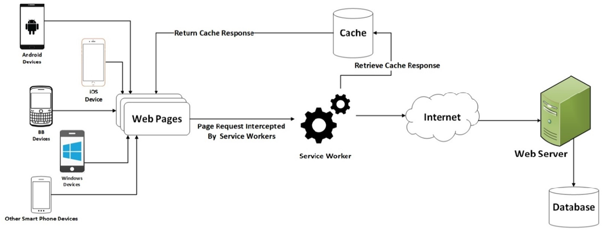
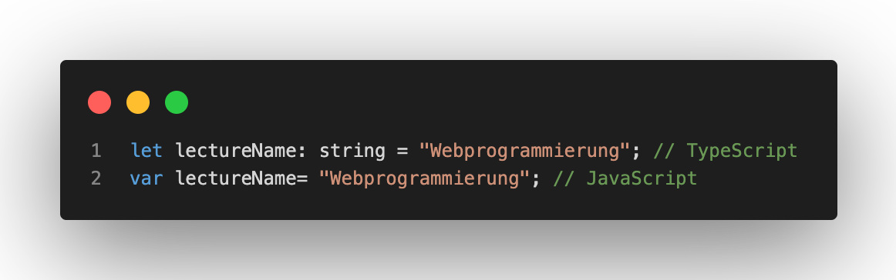
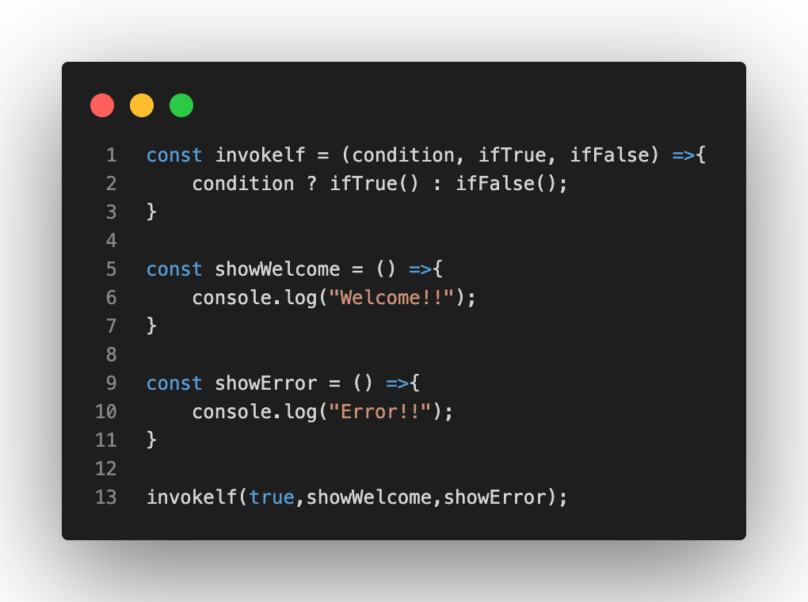
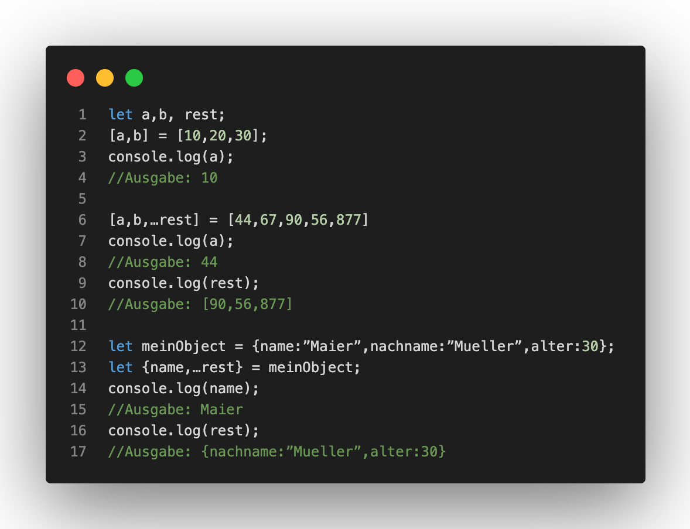
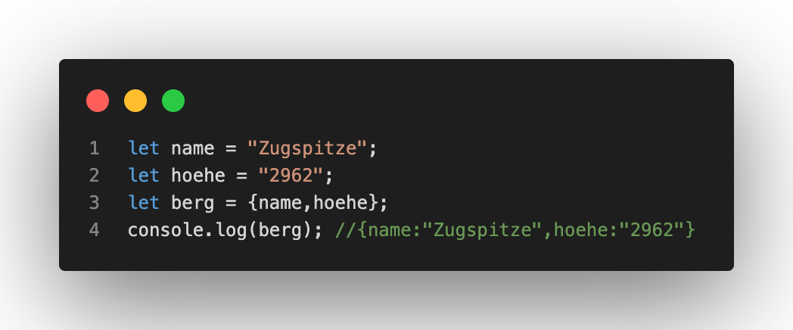
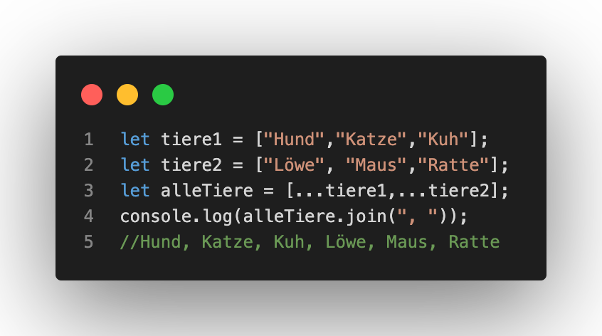
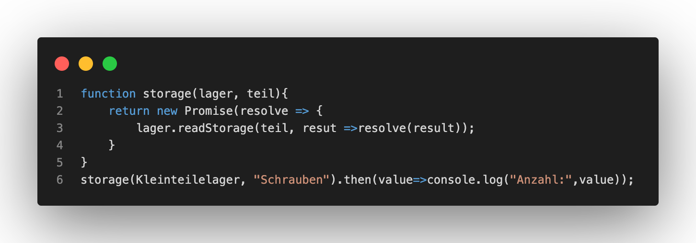

Progressive Web Apps (PWA)
Progressive Web Apps können als Ergebnis einer Kombination aus einer responsiven Webseite und einer App definiert werden. Diese in kurz PWA genannten Progressive Web Apps werden mit Hilfe von HTML5, CSS3 und JS (oder auch Typescript(TS)) programmiert. Zur Client-Server-Kommunikation wird dabei das Hypertext Transfer Protocol Secure(HTTPS)-Protokoll genutzt. Zudem verfügt die PWA über einen eigenen Cache, der bei einer Client-Anfrage entscheidet, ob eine Internetverbindung notwendig ist oder nicht. Dies ermöglicht somit die Offline-Nutung der Applikation, das Senden von Push-Nachrichten und die Hintergrundaktualisierungen.

Zusätzlich dazu unterscheiden die PWA sich in Single-Page-Applications (SPA) und Multi-Page-Applications (MPA).
SPA vs MPA
Multi-Page-Applications (MPA) sind uns bereits bekannt, sie bestehen aus mehreren HTML-Seiten, die miteinander verbunden sind. Ein Beispiel dafür ist dieses Portfolio, denn wenn Sie in Menüleiste oben von Vorlesung 1 auf Vorlesung 2 wechseln, wird eine neue HTML-Seite geladen, die ebenfalls als eine andere HTML-Datei im Verzeichnis zu finden ist. Dabei entsteht auch Redundanz. Denn wie sich unschwer erkennen lässt, sieht die Menüleiste auf allen Seiten exakt identisch aus, da der Quellcode für die Menüleiste in jede HTML-Datei kopiert wurde, um einen einheitlichen Look und eine angenehme Nutzung zu ermöglichen. Dieses Problem beheben die sogenannten Single-Page-Applications (SPA). Denn diese ermöglichen es Komponenten einmal zu formulieren und beliebig oft zu nutzen, sie sind somit reusable und somit sparen sie dem Entwickler Zeit und vermeiden Redundanzen. Aus Entwicklungssicht funktioniert das Ganze so, dass es nur eine HTML-Seite gibt, in die der JavaScript-Code verschiedene Inhalte rendert/lädt. Somit gibt man innerhalb des JavaScript-Codes das Design, den Inhalt und die Struktur (wann welche Seite gezeigt werden soll) an und die HTML-Seite zeigt den Inhalt, den sie von JS breitgestellt bekommt, an. Ein beliebtes (und immer beliebter werdendes) Framework dafür ist React.
React
Typescript
Auch Typescript wird immer beliebter und basiert auf dem ECMAScript-6-Standard beziehungsweise auf JavaScript. Die von Microsoft entwickelte Programmiersprache kann also auch als Superset von JavaScript bezeichnet werden. Somit funktioniert jeder JS-Code auch in TS, jedoch funktioniert TS-Code nicht (immer) in JS. Klassen, Objekte, Methoden und Ähnliches funktionieren wie in JavaScript. Den Vorteil den Entwickler durch Typescript genießen ist die Typsicherheit, die eine höhere Code-Qualität bietet. Die Typsicherheit ist dabei aus anderen Programmiersprachen wie zum Beispiel Java oder C# bekannt. Das folgende Beispiel verdeutlicht den Vorteil der Typsicherheit:

Node.js
Node.js ist in C, C++ und JavaScript geschrieben und ist eine Single-Thread, Open Source, plattformübergreifende Laufzeitumgebung. Es wird im Bezug auf Webanwendungen als Backened genutzt und bietet Schnelligkeit und hohe Skalierbarkeit. Dabei kann Node.js auch erweitert werden. Zum Beispiel wird der Node-Package-Manager(NPM) dazu verwendet Module, wie zum Beispiel React oder auch Firebase als Datenbank, mit ihren Abhängigkeiten zu installieren, kompilieren, aktualisieren und zu entfernen.
Express.js
Express.js ist ein Webframework für Node.js. Es erweitert somit die Werkzeuge von Node.js für den Entwickler. Express.js unterstützt dabei das Entwickeln von SPA, MPA und hybriden Webanwendungen. Express.js stellt ein Routing-System zur Navigation zur Verfügung, aber auch robuste, vereinfachte Funktionen mit denen sich leistungsfähigere Komponenten entwicklen lassen.
JavaScript
Wir beschäftigen uns nun mit einzelnen Funktionen, Mehoden etc. die JavaScript bereitstellt. Wie erwähnt lassen diese sich problemlos auf Typescript übertragen. Im folgenden gehe ich dabei nur auf (mir) unbekanntere Bestandteile aus der Vorlesung ein und lasse bereits intesiv besprochene Punkte wie klassische Datentypen, Objekte, Variablen, Schleifen, Methoden oder ähnliches aus.
High Order Functions (HOF)
Als High Order Functions bezeichnet man Funktionen, die andere Funktionen verändern beziehungsweise beeinflussen können. Ein Beispiel für eine HOF sieht folgendermaßen aus:

Object Destructuring
Object Desructuring wird verwendet, um einzelne Werte und Eigenschaften von Arrays und/oder Objekten zu lösen.

Object Literal Enhancement
Object Literal Enhancement ist das Gegenstück zu Object Destructuring. Somit können durch diese Anwendung Objekte und/oder Arrays zusammengesetzt werden:

Spread Operator
Durch den Spread Operator können zwei Arrays in ein drittes Array kombiniert werden. Dabei entsteht eine lokale Kopie und somit werden die originalen Daten nicht beeinflusst oder beschädigt.

Asynchrone Programmierung
In einem synchronen Programm passieren Dinge nacheinander, somit kann das Programm solange ein Prozess / eine Aktion nicht abgeschlossen ist nicht weiterarbeiten. Im Gegenzug können bei einem asynchronen Programm mehrere Prozesse / Aktionen gleichzeitig ausgeführt weden. Somit kann das Programm parallel oder wie der Name bereits sagt asynchron gearbeitet werden. Dabei wird das Programm benachrichtigt sobald eine Aktion abgeschlossen ist und weiß somit genau wann er auf das Ergebnis zugreifen und dieses verwendet / verarbeiten kann.
Das folgende Beispiel verdeutlicht dabei die Unterschiede. Denkt daran, dass zwei Ressourcen aus dem Netwerk abgerufen werden sollen, so ist es in der synchronen Umgebung nur nacheinander möglich. Sprich, es wird zu erst die eine Ressource geladen, bevor die andere Ressource geladen werden kann. Somit bildet sich die erforderliche Zeit aus der Summe der beiden Antwortzeiten / Aktionszeiten. In einer asychronen Umgebung werden zusätliche Threads, die jeweils einen eigenen Prozessor haben, verwendet. Somit ist es möglich beide Ressourcen gleichzeitig anzufragen und zu laden. Beide Threads warten somit auf zeitgleich auf den Eingang der Antwort. Die erfoderliche Zeit ist dann die Zeit des Threads, der eine längere Zeit braucht. Daraus resultiert, dass wenn mehrere Ressourcen aus dem Netzwerk geladen werden sollen, die asnychrone Variante immer schneller das Ergebnis erlangt, als es die synchrone Methode tut.
Promises
Bei einem Promise handelt es sich um eine asynchrone Aktion, die zu einer unbestimmten Zeit abgeschlossen wird und dann einen Wert bereitstellt. Wenn der Wert bereitsteht kann das Promise dann jeden Interessierten darüber benachrichtigen. Ein Promise kann mit Hilfe der Promise.revolve-Funktion aufgerufen werden. Dabei wird der Wert, der übergeben werden soll, in ein Promise eingeschlossen. Ist dieser Wert schon ein Promise, dann wird er direkt zurückgegeben. Wenn das nicht der Fall ist, entsteht ein neues Promise, welches mit dem neuen Ergebnis abgeschlossen wird. Es handelt sich bei einem Promise, um eine asynchrone Aktion, die in der Zukunft abgeschlossen und ein Ergbnis liefern wird. Man kann sich das Ganze also so vorstellen, das der Wert durch ein Promise in eine asynchrone Realität verschoben wird, wohingegen ein normaler Wert einfach vorhanden ist. Ein Promise-wert kann vorhandensein oder auch erst in der Zukunft erscheinen.
Promise kann man auch als Konstrukor verwenden um einen Promise zu erzeugen. Dabei muss eine Funktion als Argument mitgegeben werden. Die Funktion im Argument wird dann ausgeführt und erhält eine bereitgestellte Funktion, die das Promise auflösen kann. Eine Codedarstellung dazu sieht so aus:
